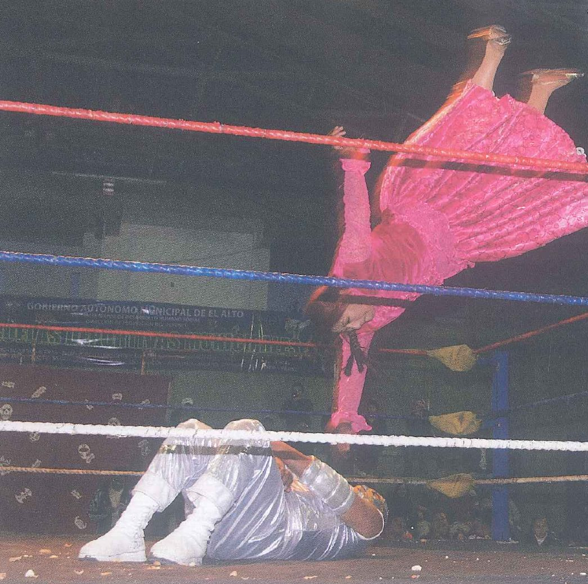
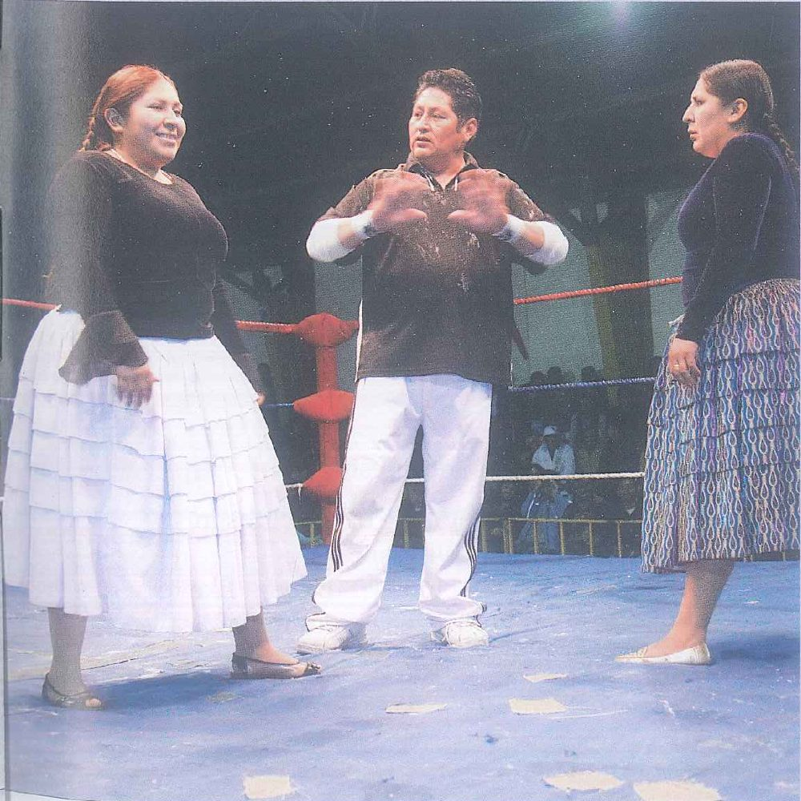

Aims and lead-in activities
Aims of the lesson
By the end of these four periods (180 minutes), you will be able to:
Knowledge
- Name the words and chunks of the 4 groups: wrestling, women in sport, Olympic sports, and clubs and membership.
- Explain what like does in like + noun or -ing, would like to + verb and be / look like + noun.
- Recognise silent letters in common words such as interested, should and half, and how a silent vowel can take away a syllable (interested has 3).
Skills
- Use like, would like to and the phrases for interests, abilities, plans and recommending in your own speaking and writing.
- Infer what the writer never says outright in Bolivian wrestlers (attitude, reasons, purpose), and find the details in PET Reading Parts 2–4.
- Pick out who wants what in Track 15 and the key facts in PET Listening Parts 1, 3 and 4.
Skills · Attitude
- Give and defend your view on women in sport, fighting sports, the Olympics and clubs with the 7-step frame (Topic 6 and card B).
- Write clear, correct sentences about your interests, abilities, plans and clubs, and check each sentence yourself.
- Value fair play, teamwork and every athlete, woman or man, and take an active, confident part in pair and group work.
Lead-in 1 · In the ring and on the noticeboard: look, guess and react
Cards 1–2 are the photos from SB 2c (pp. 26–27); cards 3–5 are the three adverts from SB 2d (p. 28).

- Question 1‘Describe the two wrestlers: what is each of them wearing, and where exactly is each one?’
- Question 2‘What do you think the crowd is doing right now?’
- Question 3‘You are the medical cadet on duty beside this ring. What would you check first after this landing?’
Model answer
One wrestler is in mid-air, upside down, in a long pink dress, and the other wrestler is lying on the floor in a shiny silver-white suit and white boots. I’d guess the crowd is on its feet, screaming and pointing at the ring. After a fall like that, I’d check the neck of the one on the floor and ask a couple of simple questions, just to be sure nobody has hit their head.

- Question 1‘Who do you think the man in the middle is, and what is he telling the two women with his hands?’
- Question 2‘Look at their faces. How does each woman feel at this moment, do you think?’
- Question 3‘If you could ask one of these women a single question after the fight, what would you like to ask?’
Model answer
He must be the referee, and with both hands up like that, he’s probably telling them to wait for his signal. The woman in white is smiling, so she looks relaxed and sure of herself, while the woman in blue looks serious and focused. I’d like to ask her how many years of training it took before her first real fight.

- Question 1‘Read only the big words on the left. Who is this advert trying to reach?’
- Question 2‘The groups are “non-competitive”. Would that make you more or less likely to go?’
- Question 3‘Who in your class would you send this advert to, and why?’
Model answer
It’s aimed at people who feel unfit or a bit lonely, maybe someone who has just moved to a new city. For me, no competition is a plus because after a long day of lectures I want to run and chat, not race. I’d send it to Tuấn, who keeps promising he’ll start running and never does.
- Question 1‘Which word stands out most in this advert, and why do you think the club chose it?’
- Question 2‘Is a prize a good reason to join a club? What else should make someone join?’
- Question 3‘Which photo on your phone would you be proud to enter in a competition?’
Model answer
WIN stands out most because a free camera grabs your attention faster than a list of meetings. Honestly, a prize might get me through the door, but I’d only stay if the people were friendly and I kept learning. I’d enter a shot of my grandfather mending his fishing net at dawn because his face tells the whole story.

- Question 1‘Look at the two white masks. What feeling does each one show?’
- Question 2‘This group cares more about keen beginners than skilled actors. Is that a smart way to find members?’
- Question 3‘Which advert would you answer first, A, B or C? Why?’
Model answer
One mask is laughing and the other seems to be crying, so I guess their shows can be funny and sad. Asking for keen people rather than stars is clever because beginners who really want it tend to turn up every week. I’d answer A first, though: the advert doesn’t even mention a fee, one evening a week fits my timetable, and I’d be far too shy to sing on a stage.
Lead-in 2 · Sport, women and clubs: agree or disagree?
1 · Watching a sport live is always better than watching it on TV.
Model answer
Not always. Nothing beats the noise in the stand when our academy scored in last year’s football final, but from the back row of a big stadium you miss half the action. At home you get a replay of every goal, and you don’t spend an hour queuing to get out afterwards.
2 · Fighting sports like boxing and wrestling are too dangerous to be on TV.
Model answer
I disagree. The danger is for the fighters, not for the people watching, and big events keep a doctor right beside the ring. What bothers me more is young kids at home trying the same throws on their little brothers.
3 · Women’s sport deserves as much TV time as men’s.
Model answer
Absolutely. Vietnam’s women’s football team played at the 2023 World Cup, which our men’s team has never managed, yet I couldn’t tell you which channel shows the women’s league. More airtime would give young girls someone to look up to.
4 · Every cadet should be good at at least one sport.
Model answer
I’d say yes. An army doctor has to stay fit for years, and a sport you’re good at keeps you training when nobody is checking on you. It doesn’t have to be football, either: my roommate is a brilliant runner and can’t kick a ball straight.
5 · A club is the easiest way to make friends at university.
Model answer
Not at the academy, in my experience. You live, eat and study with the same cadets every day, so your first friends come from your own room. Where a club really helps is with older students: a fourth-year I met at the calligraphy club now lends me his old pharmacology notes.
6 · Hard work matters more than natural talent in sport.
Model answer
Over a whole season, yes. Talent might get you picked, but turning up for every early training session is what keeps you in the team. One cadet in my platoon couldn’t manage a single pull-up in September, and by spring he was leading our morning warm-up.
- I’m with you on that, provided …
- From what I’ve seen, …
- It works for …, though maybe not for …
- Fair point, but have you thought about …?
- I’m not so sure. Think about …
Lead-in 3 · Find someone who …: teams, clubs and meetings
SB p. 28 Ex 1 · Lines 1–4 come from the book; lines 5–6 are extra. Prepare each question first, then walk round the class. Write a name only when someone says yes, and add one detail from their answer.
Find someone who … is a member of a team or club.
AskAre you …?
Follow upWhich one? How long …?
Model exchange
AAre you a member of a team or club?
BYes, I play for our year’s volleyball team.
AHow long have you been on the team?
BSince our first month here. They picked me because I was the tallest person in the room!
Find someone who … has to go to regular meetings (for example, every week).
AskDo you have to …?
Follow upWhen …? What do you do there?
Model exchange
ADo you have to go to any regular meetings?
BYes, the guitar group meets every Sunday morning in the student hall.
AWhat happens at a meeting?
BSomeone teaches a new song, and then we all play it badly together until lunch.
Find someone who … pays to be a member.
AskDo you pay …?
Follow upHow much …? Is it worth it?
Model exchange
ADo you pay to be a member of anything?
BI do. I pay a monthly fee for the gym near the back gate.
AIs it worth the money?
BI think so. It stays open until ten, so I can still go after evening self-study.
Find someone who … competes with their team or club.
AskDo you compete …?
Follow upWho against? How did you do?
Model exchange
ADo you compete with your team?
BWe do. Our class football team plays in the academy league every spring.
AHow did you do last season?
BWe finished third, which surprised everyone, including us.
Find someone who … would like to join a new club this year.
AskWould you like to …?
Follow upWhich one? What’s stopping you?
Model exchange
AWould you like to join a new club this year?
BI’d love to try the cycling group that rides out to Ba Vì on Sundays.
ASo what’s stopping you?
BMy bike, mainly. It’s older than I am.
Find someone who … is good at a sport most of the class has never tried.
AskAre you good at …?
Follow upWhere did you learn …?
Model exchange
AAre you good at any unusual sports?
BActually, yes. I’m quite good at archery.
AReally? Where did you learn that?
BMy uncle runs a small archery club back home, and I spent every summer holiday there.
- In our group, … people are members of …
- Nobody I spoke to …
- The most surprising answer came from …, who …
- … would like to …, but …
Lead-in 4 · Four word groups: how much do you already know?
Picture a big fight night. Which words do you have for the people round the ring and for what the wrestlers do?
Which words describe a sportswoman’s life away from competitions: her job, her family and her feelings?
How many Olympic sports can you name in English, and which verb goes with each one: play, do or go?
Which words would you need to join a club, pay for it and tell people what you enjoy doing there?